是纬度角，且
是纬度角，且6．多元函数微积分
两个和三个变量的函数的微积分在这个世纪的初期就已出现了。这里我们将只略述一些细节。
虽则牛顿从x与y的多项式方程［即
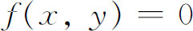
］导出了我们今天由f对x或y取偏导数而得到的表达式，但是这个工作未曾发表。詹姆斯·伯努利在他关于等周问题的著作中也用了偏导数，同样尼古拉·伯努利（1687—1759）在1720年《教师学报》的一篇关于正交轨线的文章中也用了偏导数。然而创造偏导数理论的是方丹（Alexis Fontaine des Bertins，1705—1771）、欧拉、克莱罗（Alexis-Claude Clairaut）与达朗贝尔。通常的导数与偏导数的区别在一开始并未被人们明确地认识，因而对两者都用同样的记号d表示。物理意义要求人们在多个自变量的函数中，考虑只有某一个自变量变化的导数。
克莱罗(39)得到了
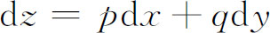
是恰当微分的条件，其中p，q是x，y的函数。所谓恰当微分是指它可由一个函数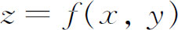
做微分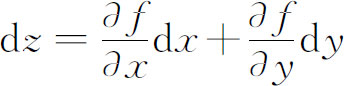
而得到。克莱罗的结果是：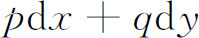
是恰当微分（即存在一个函数f使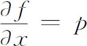
，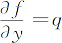
）当且仅当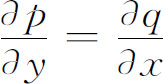
．两个或多个变量的函数的偏导数研究的主要动力来自早期偏微分方程方面的工作。因而偏导数的演算是由欧拉研究流体力学问题的一系列文章提供的。他在1734年的一篇文章中(40)证明，若
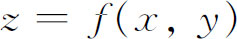
，则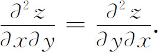
在1748年到1766年写的其他文章中，他处理了变量替换、偏导数的反演和函数行列式。达朗贝尔在1744年与1745年的动力学著作中推广了偏导数的演算。
多重积分实际上已含于牛顿的工作中，他在《原理》中讨论球与球壳作用于质点上的万有引力时就涉及到。然而牛顿用的是几何论述。在18世纪，牛顿的工作被人以分析形式加以考虑并推广。这个世纪的上半叶，重积分出现了并被用来表示
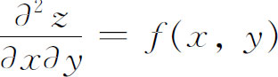
的解。例如它也用来确定一个薄片作用在一个质点上的万有引力。这样，厚度为δc的椭圆薄片作用在椭圆中心正上方c个单位处一个质点上的引力是积分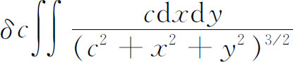
的常数倍，其中积分区域是由
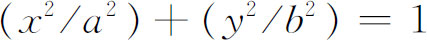
围成的椭圆。这个积分由欧拉在1738年用累次积分(41)算出。他先对y积分，然后将新的被积函数展成x的无穷级数。1770年左右，欧拉对由弧围成的有界区域上的二重定积分确实已有了清楚的概念。他给出了用累次积分计算这种积分的程序(42)。拉格朗日在他关于旋转椭球的引力的著作中(43)用三重积分表示引力。他在发现用直角坐标来计算很困难后，转用球坐标。他引入
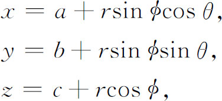
其中a，b，c是新原点的坐标，θ是经度角，是纬度角，且
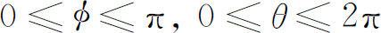
。这个积分变换的实质是用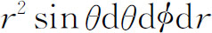
代替dxdydz。自此拉格朗日开始了多重积分变换的课题。其实拉普拉斯也几乎同时作出了球坐标变换(44)。